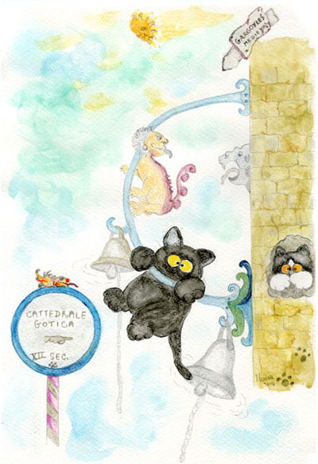
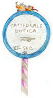

L’acchiappapiume, il dì della festa
ovverosia
Come Poldo tenore squattrinato si ritrovò a cantare Core ingrato e un Carmina Burana alla Badessa che vecchia era ma non per questo fessa

Cadea la ricorrenza del padre fondatore, il mite e saggio Anselmo
Nel grande calendario dei vecchi gatti beati
Se ne tessean le laudi, si cantava da ore.
Con giochi, lazzi e danze i cuori erano lieti
E ancor di più le panze dei pii gatti preti.
Amava intrattenere Mommy la badessa, i gattini di casa ma senza creare ressa.
Poscia organizzava regali e cotillons per i micetti buoni e per gli altri un pò coion…
Con un antico gioco di medieval costume che ancora si ricorda come l’Acchiappapiume
Ea si disponea con grazia ed eleganza, sopra il seminterrato, grattandosi la panza
E da qui lei gettava con sorriso gentile le piume d’un cuscino ai gatti del cortile.
Quei pargoli forniti ciascuno d’un bicchiere acchiappavan le piume che planavan leggere.
…e se un colpo di vento le portava lontano le rincorrevan lesti con fare un po’ gitano.
Ameno era il cimento e qualche partecipante nella foga del gioco perdeva le mutande.
Così nella badia e giù lungo la via risuonavano liete argentine risate
Parolacce volgari e… persino pedate.
Poi verso mezzogiorno, Bimba la campanara dimenando la coda come un bel campanile
Avvertiva che il desco era pronto in cortile
Avea preso il brevetto di “campanara in seconda” un pò per corrispondenza
Studiando a notte fonda sulla vecchia credenza, solerte e assai gioconda.
Essendo il campanaro Martino ormai in pensione era stata essa scelta su raccomandazione.
Facea la graziosa pratica con un tegame dandolo sulla testa a qualche gatto infame.
Di colorito bruno, bella, poco operosa
Da tutti era chiamata “la donzella lagnosa”.
Nel primo pomeriggio s’attendeva un evento, le gatte majorettes e la banda del convento

Per festeggiare il Mite, quel gatto nero e santo al quale ogni cor volge con immenso rimpianto.
Rosetta, la pupetta, che tiene lo spartito con l’altra zampa regge due trote e un beccafico.
Al trombone l’Opossum, in verità stonato soffia da far paura che pare un forsennato.
Ma il giocondo pomeriggio autunnale era minacciato dall’ombra di un gattaccio scellerato.
Un malo felino da lungi li osservava e come guastar la festa organizzava.
Pusillanime e reo senza padre ne madre di cactus avea la coda e lo sguardo di brace.
Poldo era conosciuto come gatto spennato, da sempre si dicea di Mommy innamorato.
Di princìpi non proprio vittoriani, rubava nelle fiere addentando i salami.
Le frequentava tutte di destra e di sinistra e da tutte attingeva con zampa fiera e lesta.
Di quella gatta integerrima tenea esso un ritratto, conservato in cantina con la coda di un ratto.
Si nasconde così quel reo dietro la grancassa mentre la banda intona un bel ritmo di “salsa”.
E fra una “rumba” e una “bachata”, l’infingardo si ritrova sopra la scalinata.
Intanto Mommy l’ignara, con gli infanti contenti e lieti, tenea girotondo con quattro gatti preti.
Ambrosio il fraticello presto però s’avvide che dietro la grancassa
Una coda spennata rendea la melodia gracchiante e un po’ stonata.
E immantinente dato l’allarme svegliò la campanara che s’era appisolata davanti alla grigliata.
S’aggrappa l’eroina al campanile ancora mezzo assopita urlando a squarciagola:
“O la coda o la vita!!!!!!!!!!!!!!”
Il bronzeo batacchio comincia a rimbombare che il rintocco si ode anche e fin oltre il mare.
Il furbo Leopoldo che la voce avea bella si finge tenore e sulla gerla intona “La danza delle ore”
Era anche capitato in un recente passato che dentro il pollaio Aveva Mommy trovato
Sopra un vecchio saio qualche pelo grigio e una forma gattesca alquanto pittoresca
E aveva immaginato qualche apparizione di anima dannata per crear tentazione.
Ma non potea supporre la badessa che il vile lì trovansi in carne e ossa…!
Avea esso l’ardire d’intonare stornelli alla di lei porta in tipo romanesco
Del tipo “Che ci frega e anche che c’importa”
La mala creatura, rea d’ogni iattura, amava abbindolare gatte di malaffare
Con proposte di Bingo e vacanze sul mare
Ma non inganna Mommy che urla inviperita contro lo pernicioso dalla coda spinata.
Furono botte e furono occhi neri, furono Parole e furono Pensieri
E la banda intanto intona anche l’Inno dei bersaglieri.
L’intraprendente gatto con coppola e calzoni in stile un pò tortuga
Con zampa assai graziosa salta sul basso tuba che esplode in un boato assai orripilante
Disturbando il riposo della sorella Piffy che s’alza strepitante.
Fra urla, lazzi e risa la rissa fu fragrante di rancori sopiti e a tratti… persino commovente.
Anche Punkia il sagrestano pensò davvero bene
Di andare un po’ a sbirciare e di dare una mano
In caso che qualcuno preso da mal di panza necessità avesse di ritirarsi in stanza
Nel “recessum cubiculum” acconciato all’occasione per qualche pellegrino un po’ puzzone
A lungo si discusse, volarono sganassi, si sedarono risse.
Poldo onde espiare, fu condannato nell’ordine a cantare:
“Munasteru e’ Santa Chiara”
“Fratelli d’Italia”
“Una rotonda sul mare”
E come bis concesse “Io tu e le rose” per la madre badessa e per le gatte lagnose.
Epilogo
La festa patronale si concluse a notte fonda
Mentre i topi ridevan sul canale di gronda.
Dopo i fuochi d’artificio e del mattino l’Ufficio
Ognun col cor leggero e anche la panza
Si ritirò beato nella sua propria stanza
Perché col canto e la penitenza
Quell’anima dannata la strada del perdono avea ritrovata.
Adesso del convento è fratello portiere
Tiene lontani i cani, recita le preghiere.
E se per qualche negligenza ruba un tonno dalla credenza
Con la zampa sul cuore è costretto a cantare
“Io tu e le rose”… per le gatte belle e per quelle lagnose…
e “Core ingrato” e un “Carmina Burana” alla vecchia badessa
che lo applaude in sottana.
Maria
28-10-2004